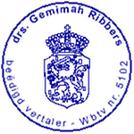
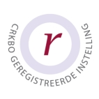
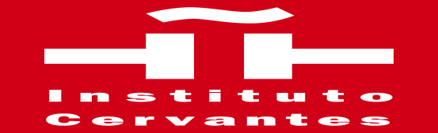

Over Buena Comunicación
Wie zijn wij?
Buena Comunicación is opgericht in 2005 door drs. Gemimah Ribbers-Zúñiga Valdés in Almere. Inmiddels worden door verschillende docenten cursussen gegeven bij Buena Comunicación. Uitgangspunt daarbij is dat de docenten altijd native speaker zijn en een relevante opleiding op het gebied van Spaanse taal- en letterkunde of op het gebied van tolk- en vertaler Spaans hebben gedaan. Alle docenten beschikken tevens over jarenlange ervaring met het geven van Spaanse les in Nederland. Plezier in het leren van de spaanse taal en resultaat bij het leren van het Spaans staan bij ons voorop.
Naast de cursussen Spaans worden door Buena Comunicación ook andere activiteiten georganiseerd voor de cursisten. Dit zijn bijvoorbeeld: het bijwonen van lezingen, bioscoopbezoek als er Spaanstalige films worden vertoond, etc.
Sinds 2013 kunt u bij Buena Comunicación ook terecht voor beëdigde vertalingen van uw teksten en documenten. Wij vertalen zowel van het Nederlands naar het Spaans als van het Spaans naar het Nederlands.

Gemimah Ribbers-Zúñiga Valdés, oprichtster van Buena Comunicación
Trainster Spaans en beëdigd vertaler
Kwaliteit
Buena Comunicación is aangesloten bij de volgende organisaties:
- Gemimah Ribbers van Buena Comunicación staat ingeschreven in het Register beëdigde tolken en vertalers (Rbtv) onder nummer 5102.
U kunt het register hier raadplegen.

- Gemimah Ribbers van Buena Comunicación is lid van het Nederlands Genootschap van Tolken en Vertalers (NGTV). U kunt het register hier raadplegen.
- Buena Comunicación is erkend als Kort Beroepsonderwijs en ingeschreven in het CRKBO (Centraal register Kort Beroepsonderwijs)
In het CRKBO kunnen onderwijsinstellingen worden ingeschreven die voldoen aan de Kwaliteitscode voor Opleidingsinstituten voor Kort Beroepsonderwijs. Opname in dit register is gekoppeld aan een kwalitatieve audit van de instelling (de erkenningsregeling). Is een onderwijsinstelling ingeschreven in het register, dan is die instelling daardoor een erkende instelling als bedoeld in de Europese BTW-richtlijn.
U kunt het register hier raadplegen

- Gemimah Ribbers van Buena Comunicación is examinator van de erkende examens Spaans als tweede taal (D.E.L.E) van het Instituto Cervantes voor alle niveaus A1-A2-B1-B2-C1-C2 en het speciaal examen voor scholieren A2-B1. Examinatornummer: O14324
Voor meer informatie kunt u deze pagina (in het Spaans) raadplegen

Nu inschrijven »»
(Inschrijven is vrijblijvend. De inschrijving is pas definitief na akkoord en betaling van het cursusbedrag.)